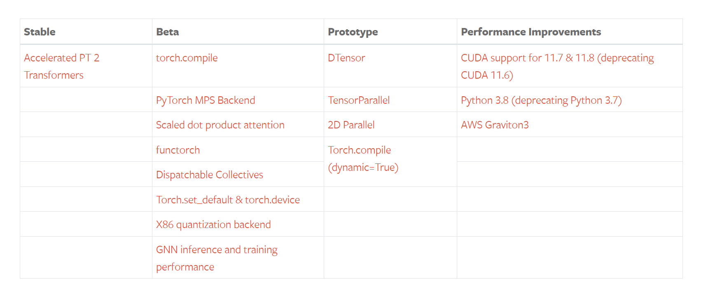
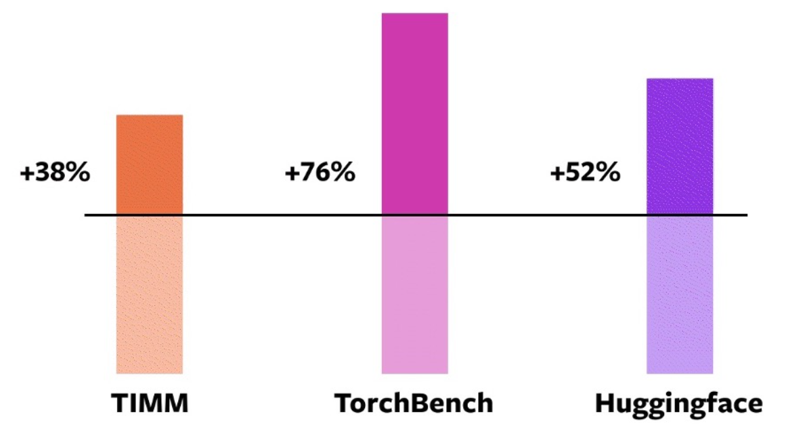
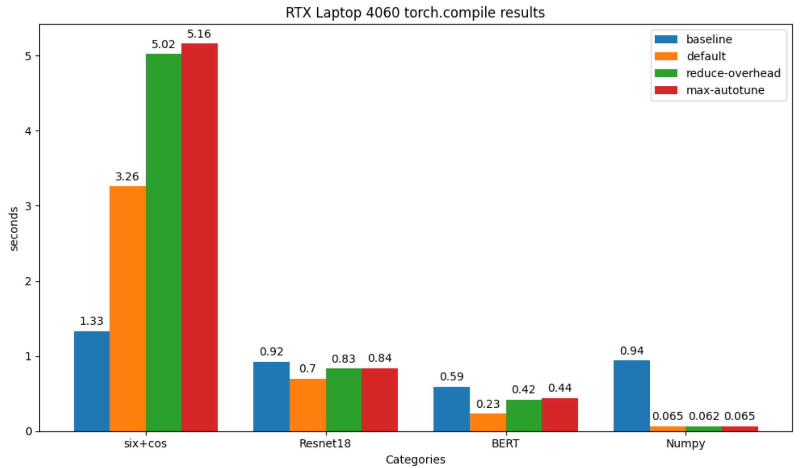

1.7 PyTorch 2.0 与torch.compile
前言
由于本书开始撰写是2021年，当时pytorch 2.0还未发布。因此主要基于pytorch 1.12进行实践，近期随着LLM等新技术的发展，pytorch2.x应用越来越广泛，为此新增一篇pytorch 2.0的介绍， 并对torch.compile进行代码实验。
pytorch 2.0是2022年12月初在PyTorch Conference 2022 上正式宣布，距离上一个版本pytorch 1.13 的发布仅一个月。虽然早在2022年12月就宣布2.0，但稳定版式2023年3月才正式上线，截止2024年7月，pytorch版本已经发展到2.3。
为什么叫2.0？而不是延续1.13命名为1.14？因为本次更新有众多特性，并且更新内容繁多，相对于1.13.1，2.0有428位开发者贡献了4541个代码提交，可见2.0的更新内容庞大。
2.0 特性
参考官方发布文档，这里总结一下2.0带来的新特性。虽然发布了很多特性，但是对于入门/普通开发者而言，关系不大。pytorch从2017年发展到2022年已经过去五年，从最初的用户易用逐步向工程化、高性能方向迭代，因此后续的版本更多是针对规模化落地、大型AI基建、平台兼容性等方面。
所有的新功能点如下表所示：

其中最大的特点是torch.compile的发布，它是pytorch走向编译范式的重要模块，也是pytorch2.0发布会重点介绍的部分。
下面围绕torch.compile展开梳理几个与编译相关的核心特性。
特性一：torch.compile
torch.complie目的是提高计算速度。通常使用只需要一行代码即可完成，例如：model = torch.compile(model)。
之所以一行能让整个pytorch运算提速，是因为complie是一个高级接口，它背后使用了 TorchDynamo、AOTAutograd 和TorchInductor 等工具链来对模型的计算图进行分析、优化和编译。
torch.complie是与开发者关系最大的、最有别于1.x的特性，它背后对于计算图的分析、优化和编译是本次更新的核心构成，但对于普通用户而言，了解好torch.compile的接口，了解其可提高模型计算速度就可以。
特性二：TorchDynamo
TorchDynamo是支撑torch.compile的工具，它可进行快速地捕获计算图（Graph），计算图在深度学习中至关重要，它描述了数据在网络中的流动形式。在早期，pytorch团队已经对计算图的捕获进行了一些列工具开发，例如TorchScript。但TorchDynamo相较于之前的工具，在速度上有了更大提升，并且在99%的情况下都能正确、安全地获取计算图。
特性三：AOTAutograd
AOTAutograd 的目的是希望在计算运行之前，捕获计算的反向传播过程，即“ahead of time Autograd”。AOTAutograd 通过重用和扩展PyTorch的现有自动微分系统，实现提高训练速度。
特性四：TorchInductor
TorchInductor 是一个新的编译器后端，可以为多个硬件平台进行生成优化的代码，例如针对NVIDIA和AMD的GPU，使用OpenAI 的Triton语言（一门GPU编程语言，不是NVIDIA的推理框架）作为目标语言，针对CPU，可生成C++代码。由此可见，TorchInductor 能够为多种加速器和后端生成快速的代码。
特性五：PrimTorch
PrimTorch 是将PyTorch底层操作符（operators）进行归约、精简，使下游编译器开发更容易和高效。PyTorch包含1200+操作符，算上重载，有2000+，操作符过多，对于后端和编译器开发式不友好的。为了简化后端开发，提高效率，PrimTorch项目整理了两大类基础操作符，包括：
- Prim操作符：相对底层的约250个操作符
- ATen操作符：约750个操作符，适合直接导出
小结：TorchDynamo、AOTAutograd、TorchInductor和PrimTorch 都在为PyTorch的计算效率服务，让PyTorch计算速度更快、更pythonic。
对于普通用户，重点关注torch.compile的接口使用，接下来将对torch.compile的概念和使用展开说明。
torch.compile 效果
得益于多个模块的优点组合，compile模式对大部分模型均有加速效果，下面看看官方给出的效果对比。
实验配置如下
- 采用A100 GPU，
- 采用46个HuggingFace Transformers模型、61个TIMM模型、56个TorchBench模型
- 采用AMP和float32两种数据精度，最终数据采用加权平均计算，0.75 AMP + 0.25 float32
- 程序仅采用compile进行包装，不修改任何代码
结果表明，93%的模型都可以采用torch.compile， 并且有43%的训练速度提升，其中AMP速度有51%提升，float32有21%的提升。
在三个模型库中，加速情况如下图所示：

torch.compile 接口
根据官方文档定义，"Optimizes given model/function using TorchDynamo and specified backend."
torch.compile是采用TorchDynamo和指定的后端对模型/计算进行优化，期望使模型/函数在未来应用时，计算速度更快。
使用上，torch.compile接收一个可调用对象（Callable）， 返回一个可调用对象（Callable），对于用户，只需要一行代码，调用compile进行优化。
参数：
- model (Callable) : Module或者是Function， 这个Function可以是pytorch的函数，也可以是numpy语句，当前compile还支持numpy的加速优化
- mode：优化模式的选择，目前（2024年7月16日）提供了四种模式，区别在于不同的存储消耗、时间消耗、性能之间的权衡。
- default : 默认模式， 在性能和开销之间有不错的平衡
- reduce-overhead：这个模式旨在减少使用CUDA图时的Python开销。该模式会增加内存占用，提高速度，并且不保证总是有效。目前，这种方法只适用于那些不改变输入的CUDA图。
- max-autotune：基于Triton的矩阵乘法和卷积来提高性能
- max-autotune-no-cudagraphs： 与max-autotune一样，但是不会使用CUDA计算图
- fullgraph (bool) : 是否将整个对象构建为单个图（a single graph），否认是False，即根据compile的机制拆分为多个子图。
- dynamic (bool or None) : 是否采用动态形状追踪，默认为None，对于输入形状是变化的，compile会尝试生成对应的kernel来适应动态形状，从而减少重复编译，但并不是所有动态形状都能这样操作，随缘吧，这个过程可以设置TORCH_LOGS=dynamic来观察日志信息。
- backend (str or Callable) : 选择所用的后端，默认是"inductor"，可以较好平衡性能和开销，可用的后端可以通过torch._dynamo.list_backends()查看，注册自定义后端库，可参考 https://pytorch.org/docs/main/compile/custom-backends.html
- options (dict): 用于向后端传入额外数据信息，key-value可以自定义，只要后端可读取即可，这个参数预留了较好的接口。
- disable (bool): Turn torch.compile() into a no-op for testing
torch.compile 实验
为了充分观察compile带来的速度变化，以及不同mode之间的影响，下面针对四种情况分别进行速度的观察。
四种情况包括：简单的pytorch运算， Resnet18， BERT， numpy计算。
并在三种型号GPU进行了测试，分别是RTX 4060 Laptop GPU 、L20、H20。
配套代码位于github，注意，torch.compile目前仅支持与Linux系统，并且不支持python≥3.12。
结论：
- 常见模型均有10-30%的耗时降低
- numpy也可以用torch.compile加速，并且耗时降低高达90%
- 简单的pytorch计算并无法带来速度提升（应该是没有复杂的计算图，无优化空间了
RTX 4060 (8GB)
| Sin+Cos | Resnet18 | BERT | numpy | |
|---|---|---|---|---|
| baseline | 1.33 | 0.92 | 0.59 | 94.31 |
| default | 3.26（-144.37%） | 0.70（23.56%） | 0.23（61.04%） | 6.52（93.09%） |
| reduce-overhead | 5.02（-272.92%） | 0.83（20.99%） | 0.42（18.11%） | 6.26（93.17%） |
| max-autotune | 5.16（-269.47%） | 0.84（20.07%) | 0.44（19.62%） | 6.55（92.93%） |
| default 编译耗时 | 0.45 | 0 | 0 | 0 |
| reduce-overhead 编译耗时 | 0 | 0 | 0 | 0 |
| max-autotune 编译耗时 | 0 | 0 | 0 | 0 |

由于L20与H20服务器无法联网，于是提出BERT模型的测试
L20 （48GB）
| Sin+Cos | Resnet18 | numpy | |
|---|---|---|---|
| baseline | 1.34 | 0.23 | 1.02 |
| default | 2.27 | 0.21 | 0.05 |
| reduce-overhead | 2.27 | 0.21 | 0.05 |
| max-autotune | 2.28 | 0.21 | 0.05 |
H20（96GB）
| Sin+Cos | Resnet18 | numpy | |
|---|---|---|---|
| baseline | 1.03 | 0.25 | 0.79 |
| default | 1.74 | 0.18 | 0.04 |
| reduce-overhead | 1.75 | 0.18 | 0.04 |
| max-autotune | 1.75 | 0.18 | 0.04 |
小结
pytorch 2.0 进行了多个功能的更新，与普通用户关系最大的是compile编译功能，本小节对compile接口的入参进行分析，并且针对四种不同的modle/function进行了编译对比，对于常用的模型，compile还是可以得到一定计算速度的提升，值得大家尝试。
其中numpy可以降低90%的耗时，效果十分惊艳，这块似乎通过FAQs中发现的功能，建议可以进一步了解：